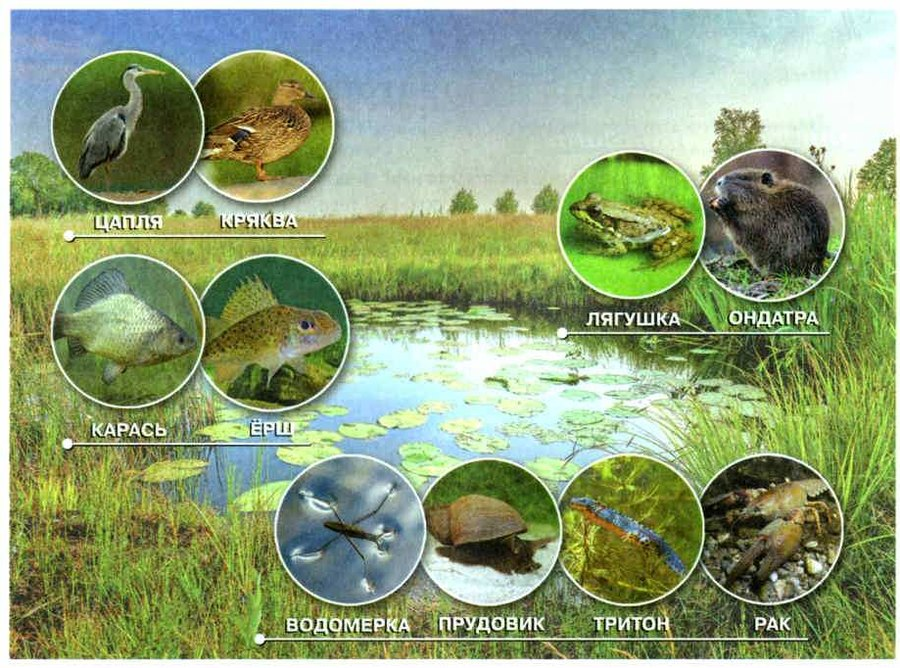
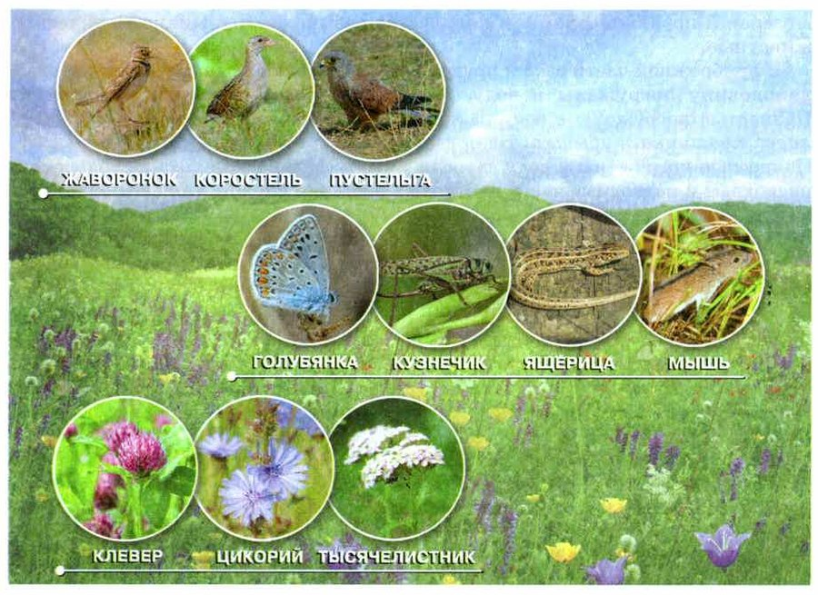
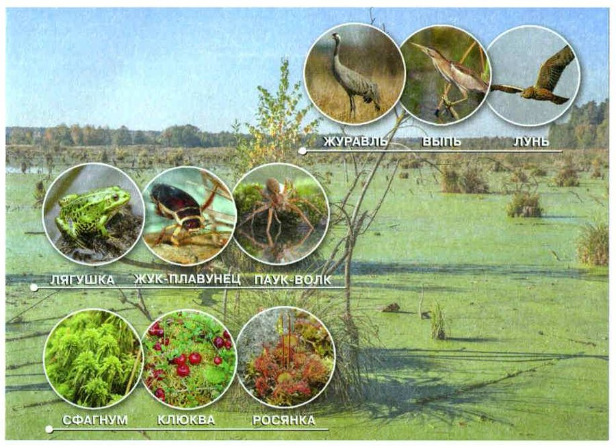
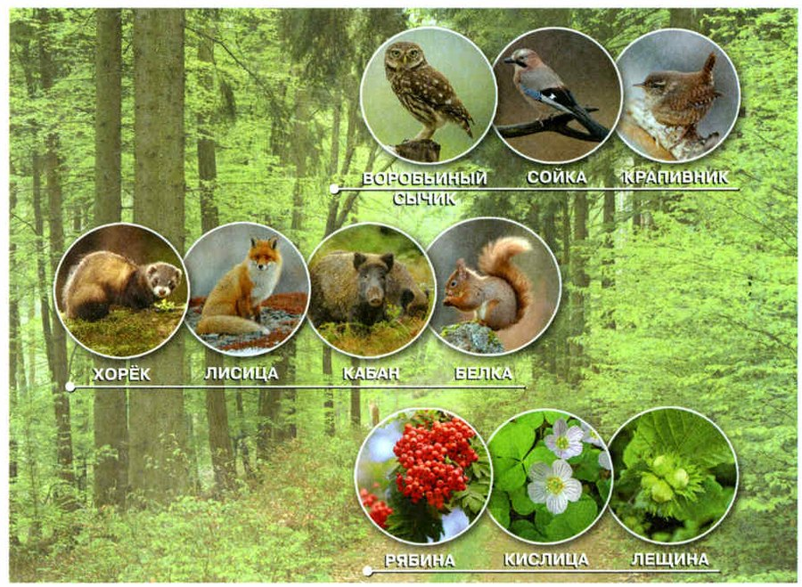
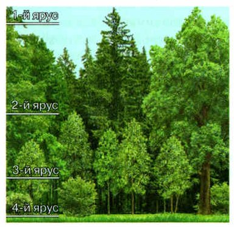

Озёра и пруды
Озеро — природный водоём в углублении суши, который не связан напрямую с морем. В нашей стране 2,7 миллиона озёр. Среди них Байкал — самое глубокое озеро в мире и самое большое по запасу пресной воды. Небольшой искусственный водоём, не больше 1 км², называют прудом.
В озёрах и прудах есть всё для жизни: свет, тепло, воздух и питательные вещества. Солнечные лучи освещают и нагревают воду. В воде растворены кислород и минеральные вещества.
Главные производители органических веществ в озёрах и прудах — микроскопические водоросли. Это они делают воду тёмно-зелёной (вспомни зелёную Волгу из §16). Водоросли — основная растительная пища для более крупных организмов. Когда водорослей много, в воде размножается огромное количество микроскопических животных.
У берега растут растения, наполовину погружённые в воду, — камыш, рогоз, частуха, тростник. Кувшинка, кубышка и стрелолист растут под водой, а листья у них плавают. По поверхности плавают ряска и водокрас, глубже — заросли элодеи. Водоросли и части цветковых растений едят многие растительноядные животные.
Здесь много насекомых, больше всего — комаров. Летом над водой летают стрекозы и откладывают яйца на листья водных растений. Личинки стрекоз живут в воде и едят насекомых, головастиков и мальков рыб. По поверхности бегают клопы-водомерки и кружатся жуки-вертячки — они ловят мелких животных, упавших на воду. В толще воды живут клопы-гладыши, жуки-плавунцы и водолюбы.
Среди растений ползают моллюски — прудовики, лужанки, катушки. На дне живут беззубки: они наполовину зарываются в грунт.
Всю жизнь в воде или рядом с ней проводят тритон, озёрная и прудовая лягушки. В толще воды плавают рыбы — растительноядные, хищные и всеядные; в заросших прудах часто встречаются караси, сазаны, щуки.
В прибрежных зарослях живут утки, гуси, лебеди, чайки. Самая известная утка — кряква. Она кормится на мелководье: клювом достаёт водные растения, насекомых, моллюсков и мелких рачков. На мелководье охотятся цапли: длинные ноги с широко расставленными пальцами держат их даже на топком дне, а длинной шеей и сильным клювом они хватают рыбу, лягушек и насекомых.
По берегам озёр живут ондатры и водяные полёвки. Ондатры роют норы с входом чуть ниже уровня воды. На зиму они строят на отмелях хатки из растений и ила, а выход из гнезда открывается прямо в воду.
Природные сообщества озёр и прудов. Озером называют природный водоём в углублении суши, не имеющий прямой связи с морем. В нашей стране находится 2,7 млн озёр. Среди них озеро Байкал — самое глубокое и крупнейшее в мире озеро по объёму пресной воды. Небольшой искусственный водоём, площадью не более 1 км², называют прудом.
В озёрах и прудах есть все необходимые для жизни условия: свет, тепло, воздух и питательные вещества. Проникая в толщу воды, солнечные лучи освещают её. От солнечных лучей вода нагревается. В воде в растворённом виде содержатся кислород и необходимые организмам минеральные вещества.
В природных сообществах озёр и прудов (рис. 102) основными производителями органических веществ являются микроскопические водоросли, придающие воде тёмно-зелёный цвет и составляющие основную часть растительной пищи для более крупных организмов. При обилии водорослей в озёрах и прудах в огромном количестве размножаются микроскопические животные.
В прибрежной части озёр и прудов растут влаголюбивые растения, которые наполовину погружены в воду, — камыш, рогоз, частуха, тростник. Полностью погружены в воду растения с плавающими листьями — стрелолист, кувшинка, кубышка. На поверхности воды плавают ряска и водокрас. Полностью погружены в воду заросли элодеи. Микроскопические водоросли, надводные и подводные части цветковых растений служат пищей многим растительноядным животным.
Озёра и пруды являются местом обитания разнообразных насекомых. Самыми многочисленными из них являются комары. В летние дни вблизи водоёмов в разных направлениях летают стрекозы. Они откладывают яйца на листья водных растений. Личинки стрекоз живут в воде и питаются насекомыми, головастиками и мальками рыб. На поверхности воды часто можно увидеть клопов-водомерок, жуков-вертячек. Они питаются мелкими животными, попадающими на поверхность воды. В толще воды обитают клопы-гладыши, жуки-плавунцы, жуки-водолюбы.
В водоёмах с большим количеством растений можно увидеть разнообразных моллюсков — прудовиков, лужанок, катушек. На дне водоёмов обитают беззубки, которые наполовину зарываются в грунт.
Всю жизнь проводят в воде или рядом с ней обыкновенный тритон, озёрная и прудовая лягушки. В толще воды обитают разнообразные рыбы, среди которых есть растительноядные, хищные и всеядные. В прудах и озёрах с обильной растительностью часто встречаются караси, сазаны, щуки.
В прибрежных зарослях обитает много водоплавающих птиц — уток, гусей, лебедей, чаек. Из уток наиболее известна и широко распространена обыкновенная кряква. Она кормится на мелководье, доставая с помощью клюва водные растения, насекомых, моллюсков, мелких рачков.
К жизни на прибрежных мелководьях озёр и прудов приспособились цапли. Высокие ноги с широко расставленными пальцами позволяют им передвигаться даже по болотистому грунту. Благодаря длинной шее и сильному клюву они схватывают мелкую рыбу, лягушек, насекомых и других водных животных.
По берегам озёр встречаются ондатры и водяные полёвки. Ондатры роют подземные норы, устраивая вход в них немного ниже уровня воды. Для зимовки они сооружают на отмелях хатки из растительного материала, смешанного с илом. Внутри хатки устраивается гнездо, выход из которого открывается в толщу воды.

▲ Кто из них живёт в воде всю жизнь, а кто — у воды?
природный водоём в углублении суши, не связан с морем; бывает огромным, как Байкал
небольшой искусственный водоём, не больше 1 км²
1. Чем пруд отличается от озера?
2. Почему вода в прудах бывает тёмно-зелёной? Вспомни §16.
3. Как цапля приспособлена к жизни на мелководье?
Луга
На равнинах лежат луга — участки земли, сплошь покрытые многолетними травами. В долинах рек бывают заливные луга: весной в половодье их заливает водой. Луговые травы хорошо освещены солнцем — света и тепла им хватает.
Основа луга — злаки: овсяница, мятлик, тимофеевка, лисохвост. Это многолетние травы с сильными корнями, которые уходят широко и глубоко в почву. Корни растут пучком и образуют плотный дёрн — он не даёт почве высохнуть. Ещё на лугу растёт разнотравье: лютики, колокольчики, васильки, нивяники (это луговые ромашки), клевер.
Животные луга приспособились жить среди трав (рис. 103). Особенно много насекомых: жуков, мух, бабочек, кузнечиков, пчёл, шмелей, ос. Обилие растений и насекомых привлекает птиц — перепелов, коростелей, трясогузок. Из хищных птиц здесь охотятся луговой и полевой луни. Часто встречаются полевая мышь и обыкновенная полёвка, а из крупных животных — лисица и заяц-русак.
Природные сообщества лугов. На равнинах располагаются луга — участки земной поверхности, на которых сплошным покровом растут многолетние травы. В долинах рек располагаются заливные луга, покрывающиеся водой во время половодья. Луговые травы хорошо освещаются солнцем, получая много света и тепла. Основу растительности на лугах средней увлажнённости составляют злаковые растения: овсяница, мятлик, тимофеевка, лисохвост. Это многолетние травы с хорошо развитыми корнями, которые широко и глубоко проникают в почву. Корни растут пучком, образуя плотный дёрн, который предохраняет почву от высыхания. Разнотравье лугов составляют лютики, колокольчики, васильки, нивяники, клевер.
На лугах обитают животные, которые приспособились к жизни среди травянистых растений (рис. 103). Особенно много здесь насекомых: жуков, мух, бабочек, кузнечиков, пчёл, шмелей, ос. Обилие растительной пищи и насекомых привлекает на луг птиц — перепелов, коростелей, трясогузок. Из хищных птиц на лугах можно встретить лугового и полевого луней. На лугах часто встречаются полевая мышь и обыкновенная полёвка. Из более крупных животных на лугах можно встретить обыкновенную лисицу и зайца-русака.

▲ Найди клевер — ты плела из него венки. Кто из животных на рисунке опыляет цветы?
4. Какие растения преобладают на лугах?
5. Почему на лугах обитает много насекомых-опылителей?
Болота
Болота — сообщества на очень сырых участках земли. Там растут низкие сосны с корнями у самой поверхности. Из кустарников обычен багульник болотный, встречается ягодный кустарник голубика.
Больше всего на болоте мхов: белого мха сфагнума и зелёного мха кукушкина льна. На сфагновых болотах стелется клюква — кустарничек с лежачими стеблями. Растёт много разных осок.
Насекомых на болоте много. Живут черви, моллюски, лягушки, гадюки. Многие птицы приспособились к болоту: аисты, цапли, выпи, бекасы, кроншнепы. Длинные ноги с широко расставленными пальцами держат их на топких местах, а длинной шеей и сильным клювом они хватают подвижных водных животных. Охотятся здесь болотный лунь и болотная сова, а из зверей встречаются водяная полёвка, выдра, ондатра (рис. 104).
Природные сообщества болот. Болота — это природные сообщества, которые образуются на сильно увлажнённых участках земной поверхности. На болотах встречаются низкорослые сосны, корни которых располагаются близко к поверхности. Из кустарников на болотах обычен багульник болотный, встречается ягодный кустарник голубика.
Больше всего на болоте мхов. К их числу относится белый мох сфагнум и зелёный мох кукушкин лён. На сфагновых болотах распространён кустарничек с лежачими стеблями — клюква. На болотах растёт много различных видов осок.
Из животных на болотах встречается много насекомых. Здесь обитают различные черви, моллюски, лягушки, гадюки. К жизни на болотах приспособились многие птицы. К их числу относятся аисты, цапли, выпи, бекасы, кроншнепы. Длинные ноги с широко расставленными пальцами позволяют им передвигаться по топким местам, а длинная шея и сильный клюв — схватывать различных подвижных водных животных. Обитают на болотах и хищные птицы. К ним относятся болотный лунь, болотная сова. Из млекопитающих на болотах встречаются водяные полёвки, выдра, ондатра (рис. 104).

▲ Найди сфагнум — этот мох ты трогала в походе.
6. Какие растения растут на болоте больше всего?
7. Чем похожи болотные птицы и цапли из раздела про пруды?
Леса и их ярусы
Лес — сообщество, в котором обязательно есть деревья (рис. 105). А ещё кустарники, кустарнички, травы, мхи, грибы, лишайники и множество животных.
Леса различают по главным деревьям. В мелколиственных растут берёза, осина, ольха. В широколиственных — дуб черешчатый, бук, клён платановидный, ясень, а из трав — ландыш, вороний глаз, лютик, медуница. В светлохвойных — сосна обыкновенная и лиственница сибирская. В темнохвойных — ель, пихта, сосна сибирская. Бывают и смешанные леса. Многие растения хвойного леса вечнозелёные: грушанки, кислица, вероника лекарственная, брусника, зимолюбка, линнея северная.
Растения в лесу растут ярусами, как этажи (рис. 106). Высокие деревья — ясень, дуб, ель — это первый ярус. Под ними — деревья пониже: рябина, яблоня дикая, клён татарский. Третий ярус — кустарники: лещина, жимолость, крушина, бересклет. Четвёртый — травы и кустарнички. А у самой земли — мхи и лишайники, пятый ярус.
На земле в лесу всегда лежат опавшие листья, отмершие побеги, сухие ветки — это лесная подстилка. В ней много грибов и бактерий: они разлагают остатки и обогащают почву гумусом и минеральными солями.
Природные сообщества лесов. Лес — это природное сообщество, обязательной частью которого являются деревья (рис. 105). В состав лесных сообществ также входят различные кустарники, кустарнички, травы, мхи, грибы, лишайники и разнообразные животные.
В зависимости от преобладающих видов деревьев различают леса мелколиственные и широколиственные, темнохвойные и светлохвойные, а также смешанные. В мелколиственных лесах растут такие деревья, как берёза, осина, ольха. Для широколиственных лесов характерны дуб черешчатый, бук лесной, клён платановидный, ясень обыкновенный. Из травянистых растений в широколиственном лесу обычны ландыш, вороний глаз, лютик, медуница.
Для светлохвойных лесов характерны сосна обыкновенная, лиственница сибирская. В темнохвойных лесах растут ель, пихта, сосна сибирская. Многие растения хвойных лесов являются вечнозелёными. Это грушанки, кислица обыкновенная, вероника лекарственная, брусника, зимолюбка, линнея северная.
Ярусное расположение растений в лесу. Высокоствольные деревья (ясень, дуб, ель) в лесу образуют верхний ярус. Под ними размещаются более низкоствольные деревья второго яруса: рябина, яблоня дикая, клён татарский. Свободное пространство между ними занято кустарниками, образующими третий ярус: лещина, жимолость, крушина, бересклет. Ближе к поверхности почвы располагаются травы и кустарнички — четвёртый ярус, а под ними и рядом с ними — мхи и лишайники, составляющие пятый ярус (рис. 106).
На почве в лесу всегда имеются опавшие листья, отмершие побеги, сухие ветки. Это лесная подстилка. В ней много грибов и бактерий, которые разлагают остатки погибших организмов, обогащают почву гумусом и минеральными солями.

▲ Кто здесь хищник, а кто ест растения?

▲ Сколько ярусов видно на фото? Какой спрятался у самой земли?
8. Какие приспособления к совместной жизни есть у растений леса?
9. Зачем лесу подстилка? Вспомни §21.
Лесные животные
В лесах множество насекомых: жуков, бабочек, мух, комаров. Важная часть лесного сообщества — рыжие лесные муравьи. Из хвои, веточек и стебельков они строят муравейники выше 1 метра. Кроме верхней части у муравейника есть подземная, с ходами. В одной семье — десятки тысяч муравьёв. Муравьи — хищники: личинок они кормят другими насекомыми и спасают лес от пилильщиков, совок, пядениц, которые едят хвою и листья (§22).
В смешанных и широколиственных лесах живут остромордая и травяная лягушки, обыкновенная и зелёная жабы, зелёная ящерица, обыкновенная гадюка. Из птиц много зябликов, дроздов, дятлов, синиц, щеглов. Мелкие звери — лесная и желтогорлая мыши, рыжая полёвка, сони, бурозубка. Один из самых распространённых лесных зверей — кабан. Хищники леса — лисицы, волки, хорьки, горностаи.
Лесные животные. В лесах встречается большое количество разнообразных насекомых. Среди них много жуков, бабочек, мух, комаров. Важной частью лесного сообщества являются рыжие лесные муравьи. Из хвои, обломков веточек и стебельков трав они строят гнёзда — муравейники, высота которых может превышать 1 м. Кроме надземной части в муравейнике есть и подземная часть с ходами. В каждой муравьиной семье насчитываются десятки тысяч особей. Муравьи — хищники. Они выкармливают своих личинок другими насекомыми и их личинками. Рыжие лесные муравьи защищают лес от массового размножения насекомых, поедающих хвою и листья деревьев, — пилильщиков, совок, пядениц.
В смешанных и широколиственных лесах встречаются остромордая и травяная лягушки, обыкновенная и зелёная жабы, зелёная ящерица, обыкновенная гадюка. Из птиц многочисленны зяблики, дрозды, дятлы, синицы, щеглы. В лесах живёт много мелких зверей. Это лесная и желтогорлая мыши, рыжая полёвка, сони, бурозубка. Одним из наиболее широко распространённых животных лесов является кабан. В лесах обитают такие хищные животные, как лисицы, волки, хорьки, горностаи.
10. Почему рыжих лесных муравьёв называют важной частью леса? Вспомни §22.
Итоги и «Моя лаборатория»
Природные сообщества: озеро, пруд, болото, лес, луг
- Чем пруд отличается от озера?
- Почему основными производителями органических веществ в озёрах и прудах служат микроскопические водоросли?
- Какие растения преобладают на лугах?
- Почему на лугах обитает много насекомых-опылителей?
- Какие приспособления к совместному существованию развились у растений, произрастающих в лесах?
- Используя рис. 104, расскажите об организмах, населяющих болота.
Почему сообщество живых организмов в аквариуме не может существовать без помощи человека?
За последние 500 лет люди уничтожили две трети лесов Земли. Быстрее всего леса исчезают в Южной Америке, Африке и Юго-Восточной Азии. За последние 200 лет площадь тропических лесов уменьшилась вдвое.
Из-за этого в воздухе остаётся примерно пятая часть углекислого газа, который люди выпустили за последние 10 лет: раньше его поглощали деревья.
За последние 500 лет при участии человека было уничтожено 2/3 покрывающих Землю лесов. Быстрее всего леса уничтожают в Южной Америке, Африке и Юго-Восточной Азии. За последние 200 лет площадь тропических лесов сократилась в 2 раза. Сокращение площади лесов приводит к тому, что в воздушной оболочке Земли остаётся примерно 1/5 часть углекислого газа, который поступил в неё в результате деятельности человека за последние 10 лет.
Проверь себя
Ошиблась — не страшно, попробуй другую кнопку.
Кувшинка
Листья плавают на воде.
Клевер
Разнотравье луга.
Сфагнум
Белый болотный мох.
Рябина
Второй ярус леса.
Кряква
Кормится на мелководье.
Перепел
Птица луга.
Клюква
Растёт на сфагновых болотах.
Кабан
Один из самых распространённых лесных зверей.
Дуб
Первый ярус.
Лещина
Третий ярус.
Ландыш
Трава — четвёртый ярус.
Рябина
Второй ярус.
Жимолость
Третий ярус.
Мох
Пятый ярус.
1. Какое озеро самое глубокое в мире?
2. Кто главные производители в прудах и озёрах?
3. Что защищает почву луга от высыхания?
4. Каких растений больше всего на болоте?
5. Сколько ярусов в смешанном лесу?
6. Как ондатра попадает из хатки в воду?
Расскажи вслух
Озёра и пруды
- Озеро и пруд: чем отличаются.
- Производители — микроскопические водоросли; растения берега, плавающие и подводные.
- Животные: насекомые, моллюски, рыбы, кряква, цапля, ондатра; мой пример — Кошачий пруд.
Луга
- Многолетние травы: злаки и разнотравье; заливные луга.
- Корни пучком образуют дёрн.
- Много насекомых-опылителей, птицы, мыши, лисица, заяц-русак.
Болота
- Сильно увлажнённые участки; низкорослые сосны, багульник, голубика.
- Больше всего мхов: сфагнум, кукушкин лён; клюква, осоки.
- Птицы с длинными ногами и клювом; мой поход по болоту.
Леса
- Лес обязательно с деревьями; мелколиственные, широколиственные, хвойные, смешанные.
- Пять ярусов и лесная подстилка.
- Лесные животные: муравьи, лягушки, птицы, мелкие звери, кабан, хищники.